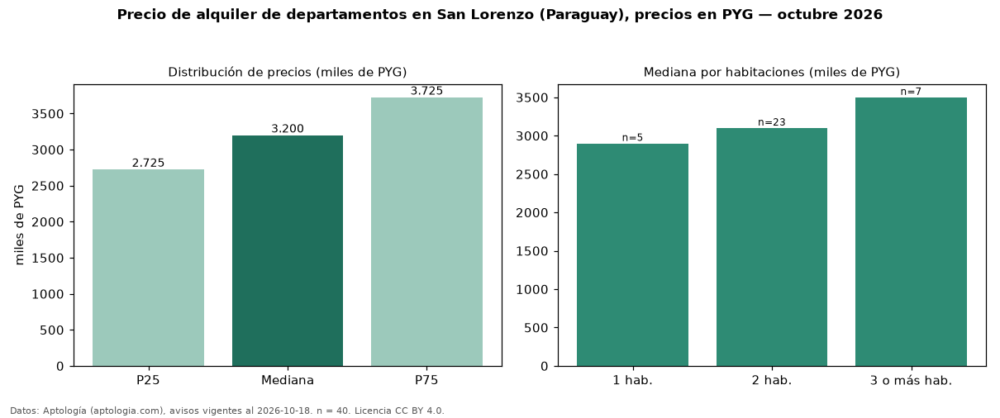

Precio de alquiler de departamentos en San Lorenzo (Paraguay), precios en PYG — octubre 2026
PYG 3,20 millones al mes es el canon mediano de departamentos en alquiler en San Lorenzo (Paraguay) (n = 40 avisos). Por precio mediano es la ciudad 5 de 5 de Paraguay con al menos 30 avisos de departamentos en alquiler (PYG). La mediana de toda la vivienda en alquiler de San Lorenzo (PYG) es PYG 3,70 millones; los departamentos quedan −14 %. El segmento con más oferta es el de 2 habitaciones (23 avisos, mediana PYG 3,10 millones); pasar de 1 habitación a 3 o más habitaciones cambia la mediana +21 %. La mitad central de los avisos va de PYG 2,73 millones a PYG 3,73 millones (razón 1,4), una dispersión baja. Datos: Aptología (aptologia.com), CC BY 4.0 — https://www.aptologia.com/py/alquiler/san-lorenzo. Archivos: PDF, CSV con las cifras y gráfica PNG.

| Avisos únicos | 40 |
|---|---|
| Percentil 25 | COP 2.725.000 |
| Mediana | COP 3.200.000 |
| Percentil 75 | COP 3.725.000 |
Fuente: avisos vigentes de portales inmobiliarios recopilados por Aptología, deduplicados (mínimo 30 avisos únicos por celda). Precios pedidos, no cerrados. Fecha: 2026-10-18.